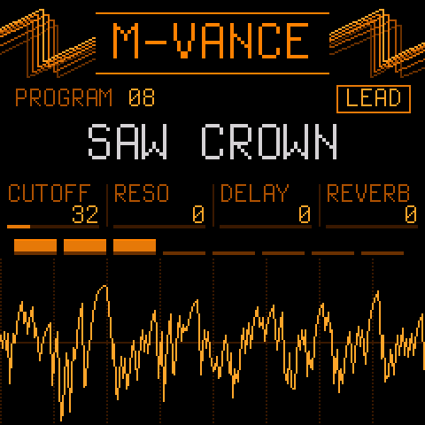
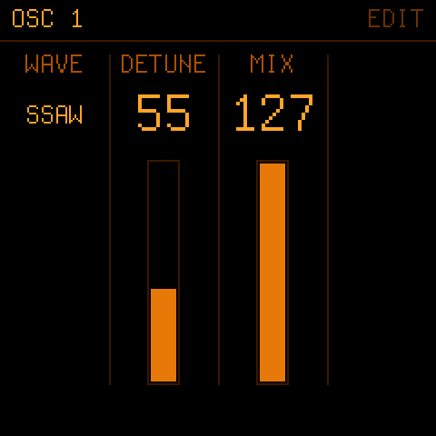
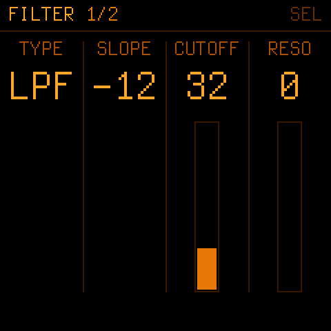
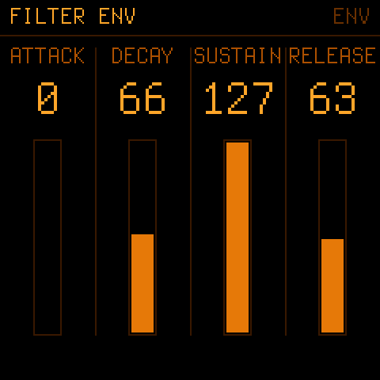
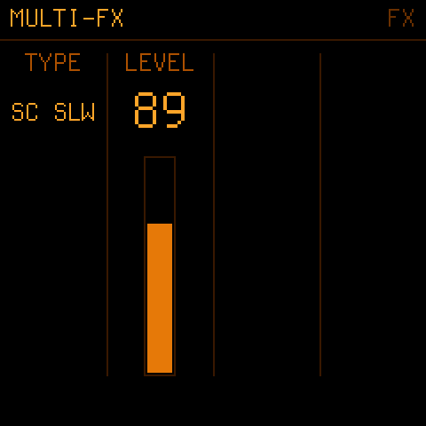
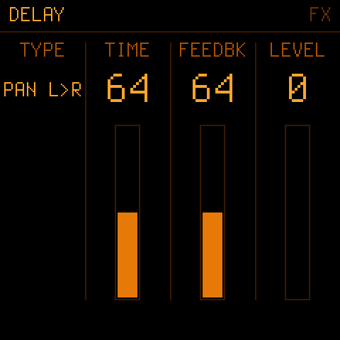
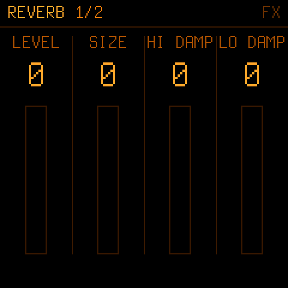
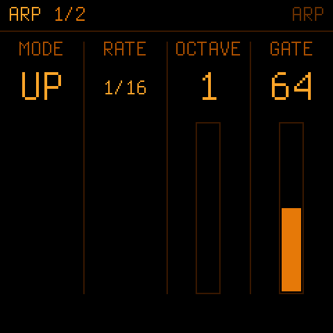
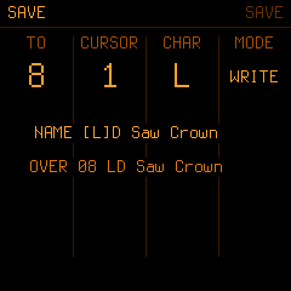
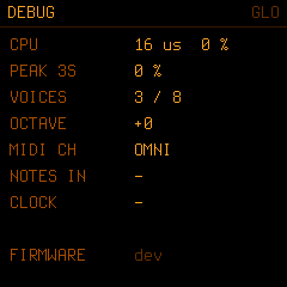

A JP-8000/8080-style virtual analog for the M-VAVE FM-1.
Open-source firmware: the JT-8000 synth engine ported to the FM-1's integer-only chip, with its laws measured against the JP-8000's own firmware. Super Saw, the JP filter, the multi-effects, delay, a plate reverb, an arpeggiator and 64 programs, on eight voices.

Where it comes from
M-vance is the FM-1 edition of the JT-8000, a JP-8000-style synth for the Teensy 4.1. Its floating-point DSP was rewritten in C99 fixed point for the FM-1's chip, which has no FPU. Compare tools run each part next to the original (oscillators, Super Saw, filter, effects, reverb) and measure the difference.
Measured, not guessed
Envelope times, LFO rates, modulation depths, the filter's cutoff and resonance laws were captured from the JP-8000 firmware running in the JE-8086 emulator, then fitted and built into tables.
Checked against the JT-8000
Compare tools run the fixed-point effects next to the JT-8000's float code: the multi-effects and delay match to −57 dB, the plate reverb to −45 dB.
Made for a small chip
Integers only, error-feedback multiplies so nothing hums at low levels, nothing computed that is not heard, and a look-ahead limiter on the output so dense chords never crackle.
The engine
| Voices | 8. POLY, MONO (last note, LEGATO), UNISON (every voice on one note, DETUNE), PORTAMENTO in every mode. A VOICES limit for headroom. |
|---|---|
| OSC 1 | SUPER SAW, TRIANGLE MOD, NOISE, FEEDBACK OSC, SQUARE, SAW, TRIANGLE. CTRL 1 and CTRL 2 change job with the wave (detune and mix, pulse width and PWM, harmonics and feedback …). |
| OSC 2 | SQUARE, SAW, TRIANGLE, NOISE. SYNC to OSC 1, RANGE ±25 semitones with the JP's WIDE ends, FINE. |
| Common | RING modulator, X-MOD, BALANCE, OSC SHIFT. A PITCH ENV (attack, decay, ±4 octaves). |
| Filter | The JP filter: LPF, BPF, HPF at −12 or −24 dB, RESONANCE, KEY FOLLOW, LFO 1 and LFO 2 depths and the FILTER ENV (ADSR), each on its measured law. |
| Amp | AMP ENV (ADSR), LEVEL, tremolo from either LFO, AUTO PAN or a fixed pan position. |
| LFOs | LFO 1: triangle, saw, square, random, with FADE. LFO 2: triangle, brought in by the mod wheel, to pitch, filter and amp. |
| Effects | TONE (bass, treble) · MULTI-FX: super chorus, flanger, phaser, twist, freeze and DISTORTION · DELAY: five stereo patterns · a stereo plate REVERB with damping, filters and FREEZE · a limiter on the output. |
| Arpeggiator | From Skiff: 14 modes (up, down, converge, pinky, walk, chord …), 1/4 to 4 bars with triplets, 1–4 octaves, gate, swing, chance, HOLD (latch), note order. Follows MIDI clock. |
| Layer / split | Every program is a performance: an UPPER and a LOWER patch, SINGLE, DUAL or SPLIT (LOWER below the split key, learned from a key press), the 8 voices cut between them, BALANCE, a MIDI channel each, and the arp on either part or both. From the JT-8000's performance. |
| Programs | 64, kept in the FM-1's flash. Rename, copy, reorder (SWAP) and restore the factory sound, all from the panel. |
| MIDI | USB-MIDI in and out, the FM-1's TRS MIDI IN. Notes, program change, pitch bend, mod wheel, clock and START. Every knob sends and receives the JP-8080's own CC numbers, so a DAW records the panel. |
The panel
The JP-8080's sections are pages on the FM-1's screen. Tap a section button for its first page, again for the next; the four knobs edit the four columns. Everything is on the cheat sheet: two A4 pages to print and keep by the FM-1, made from the firmware's own page table.









Install
With the FM-1 Firmware Hub
The easy way, once M-vance is listed there: open thefirmwarehub.com in Chrome or Edge, connect the FM-1 by USB, pick M-vance, install. Going back to another firmware works the same way.
From the command line
- Download
mvance-X.Y.fwscfrom the latest release. - Connect the FM-1 by USB and run, from a copy of the source:
python3 tools/fm1_install.py mvance-X.Y.fwsc
- The FM-1 restarts into M-vance. The home screen says M-VANCE.
Build it yourself
M-vance is built on Dinghy; its setup is Dinghy's (Linux or WSL, Python 3, the JieLi toolchain).
sh tests/run_unit.sh # the engine's tests tests/run_host.sh # the firmware on your computer: a WAV and the screens sh tests/run_docs.sh # this page's screens and the cheat sheet ./build.sh # build/mvance.fwsc python3 tools/fm1_install.py build/mvance.fwsc